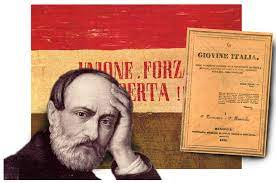
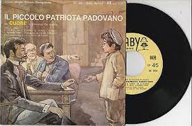
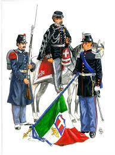
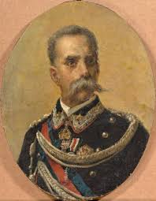
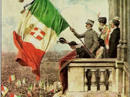
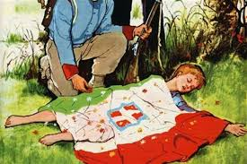
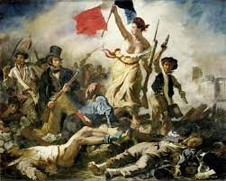
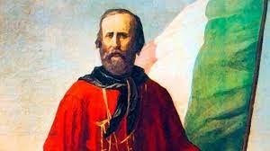
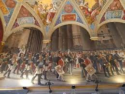
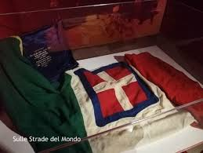

Clicca su un'immagine per ascoltare alcuni dei testi presenti nel libro Cuore!
| Giuseppe Mazzini | Il tamburino sardo | Il piccolo patriota padovano |
|---|---|---|
|  |  |
 |
| L'Esercito | Re Umberto | Valor Civile |
|---|---|---|
|  |  |  |
| La piccola vedetta lombarda | L'Amor di patria | Garibaldi |
|---|---|---|
|  |  |  |
| I funerali di Vittorio Emanuele | Italia |
|---|---|
|  |  |